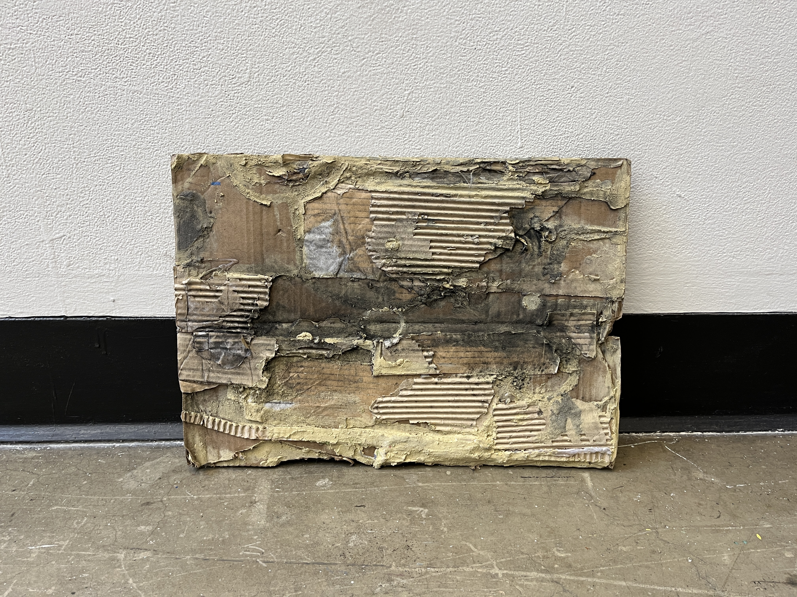

3:50pm, February 12, 2026
Ocad University 3rd Floor
This piece of scrap was found in the shared scraps bin on the 3rd floor at Ocad University. Rough Textures are introduced, experimentations can include scanning, cutting through the material, or adding color
